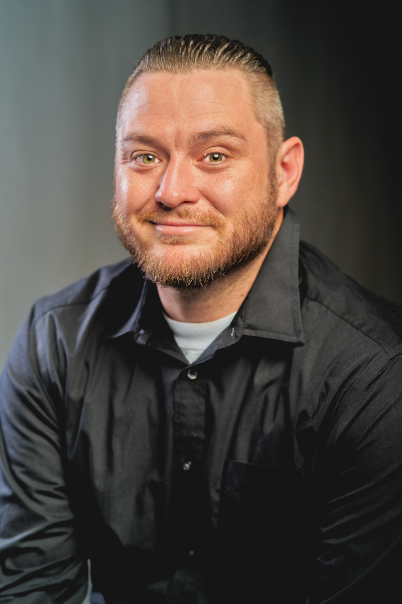

Kyle Ellico

Seeking an entry level position in the IT field to
build experience as I continue my education and hone my skills.
About Me
Contact Information
Education
- Mohave Community College
- Cybersecurity and Network Support, AAS
- April 2024 to present
Certifications
- CompTIA Security+
- ISC2 Certified in Cybersecurity
- Google IT Support Professional
Work Experience
- JEM Landscaping and Maintenance
- Owner/Operator
- July 2022 to Present
- Customer service, estimates, labor, design, QuickBooks
- Sakura Sushi and Grill
- Server
- February 2022 to July 2023
- Customer service, cash handling, detail cleaning, food prep
- Valley Wide Pool Supply
- Pool Technician
- May 2021 to October 2021
- Pool chemistry, customer service, route planning, self managed
- Left due to move from Phoenix to Kingman
- Those Guys Landscape and Maintenance
- Laborer
- May 2019 to April 2021
- Customer service, estimates, labor
- Left due to move to Phoenix
Skills
- Hardware Troubleshooting
- Software Troubleshooting
- Network Troubleshooting
- Technical Support
- Communication skills
- Desktop Support